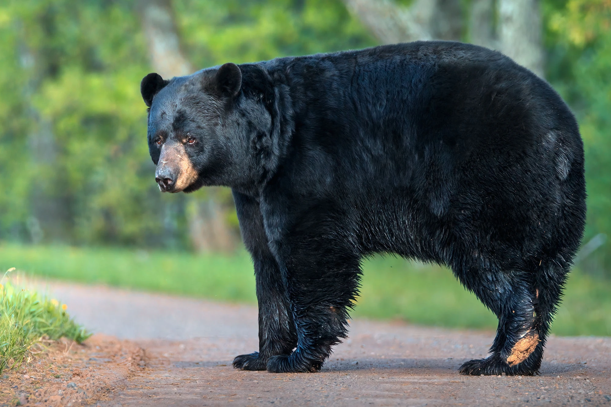
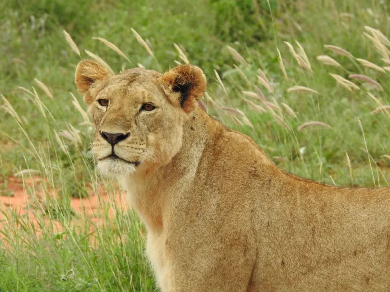
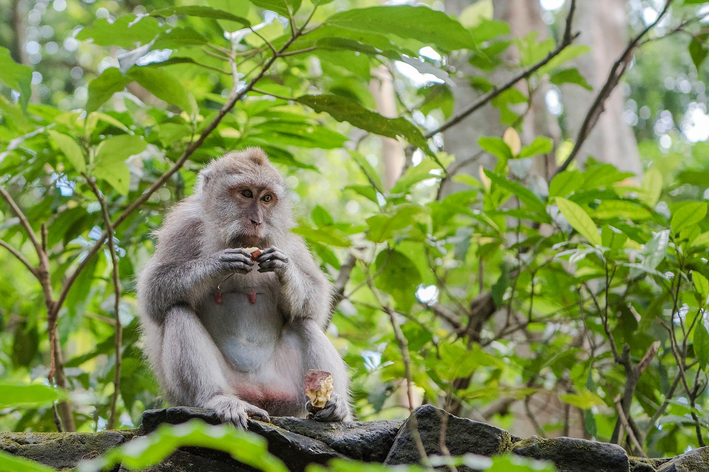
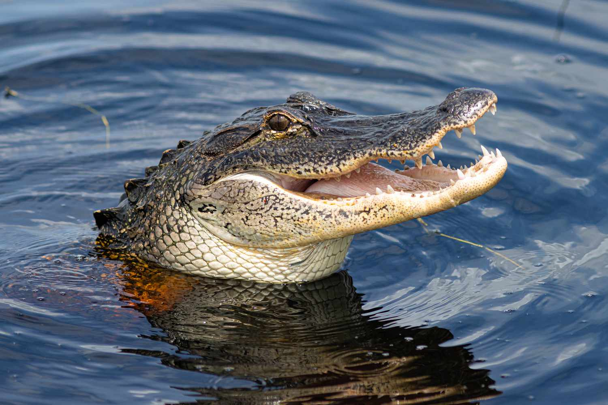
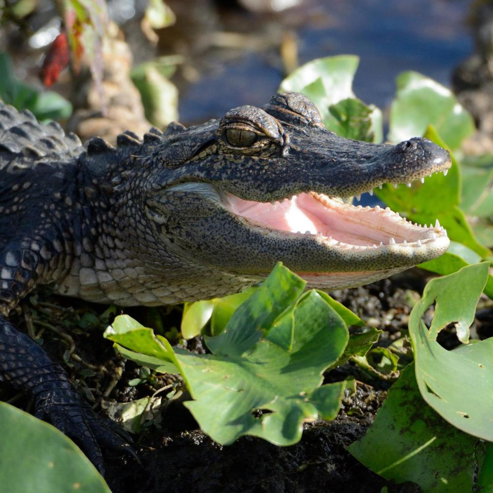

Wild Animal Mini-Zoo
Meet The Animals
Bears
The American black bear is the most common species of bear in North American forests.
Although called black bears, these animals come in varying colors. The American black b
ear has subspecies with whitish fur, called the spirit bear or Kermode bear.
More Info
- Ollie

- Mona

Giraffes
Giraffes eat most of the time and, like cows, regurgitate food and chew it as cud.
A giraffe eats hundreds of pounds of leaves each week and must travel miles to find enough food.
More Info
Lions
Lions are the only cats that live in groups, which are called prides—though there is one
population of solitary lions. Prides are family units that may comprise anywhere from
two to 40 lions—including up to to three or four males, a dozen or so females, and their young.
More Info
- Mella

- Karl

Monkeys
As apes have emerged in the monkey group as sister of the old world monkeys, characteristics
that describe monkeys are generally shared by apes as well. Williams et al. outlined evolutionary
features, including in stem groupings, contrasted against the other primates such as the tarsiers
and the lemuriformes
More Info
- Cookie

- Earl

- Banana Pudding

Alligators
Adult alligators are apex predators critical to the biodiversity of their habitat. They feed
mainly on fish, turtles, snakes, and small mammals. However, they are opportunists, and a
hungry gator will eat just about anything, including carrion, pets and, in rare instances, humans.
More Info
- Wren

- Aspen

- Mika
